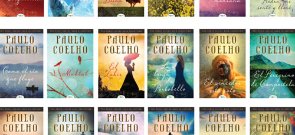

Back to top
- 1988 The Pilgrimage
- 1988 The Alchemist
- 1990 Brida
- 1991 The Greatest Gift
- 1992 The Valkyries
- 1994 By the River Piedra I Sat Down and Wept
- 1996 The Fifth Mountain
- 1997 Manual of the Warrior of Light
- 1998 Veronika Decides to Die
- 2000 The Devil and Miss Prym
- 2001 Fathers, Sons and Grandsons
- 2003 Eleven Minutes
- 2004 The Genie and the Roses
- 2005 The Zahir
- 2006 Like the Flowing River
- 2007 Life: Selected Quotations
- 2008 The Winner Stands Alone
- 2010 Aleph
- 2012 Manuscript Found in Accra
- 2014 Adultery
Back to top
Content provided by wikipedia.com